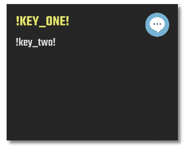
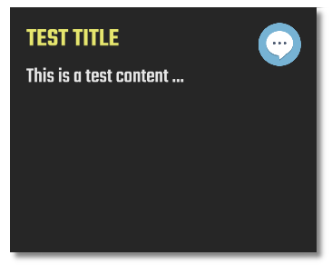
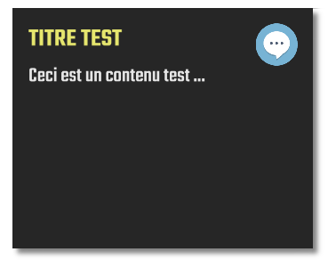

Multi language support¶
Text key¶
In order to be compatible with multi-language support, the game system introduces the text key syntax. Basically, every text displayed during the game should be a text key rather by being hardcoded in the scenario file.
A text key is simply a universal key identifying a text that can be changed as function of the language.
All these texts are defined in the label file data/gui/texts/text.csv file where first column if the text key
itself (a label in fact) and each column corresponds to its value in a given language (defined in the first row).
In a scenario file, a text key is identified between $
- Example
Assume we have in the label file
key
fr
en
…
…
…
my_title
Titre test
Test title
my_text
Ceci est un contenu test …
This is a test content ..
…
…
…
Then if we call a missing text key, it will be rendered with
!surrounding itExample of an info window with missing text keys created with¶
<step action="info" title="$key_one$" text="$key_two$"/>
If now we call an existing key with command
<step action="info" title="$my_title$" text="$my_text$"/>
It will be rendered in lang
enasAnd in
fras
Sound support¶
Sounds may also have their own language file. In that case, no need to use a particular key in the scenario file,
when a sound with name my_sound is to be played, the engine will look at xx_my_sound where xx is the current
language (en, fr etc). If this file exists, it will be played, otherwise my_sound file will be played directly.
- Example
Assume that current language is set to
fr, then command<step action="play_sound" name="my_sound"/>
will play
fr_my_soundif this file exists, otherwisemy_sound